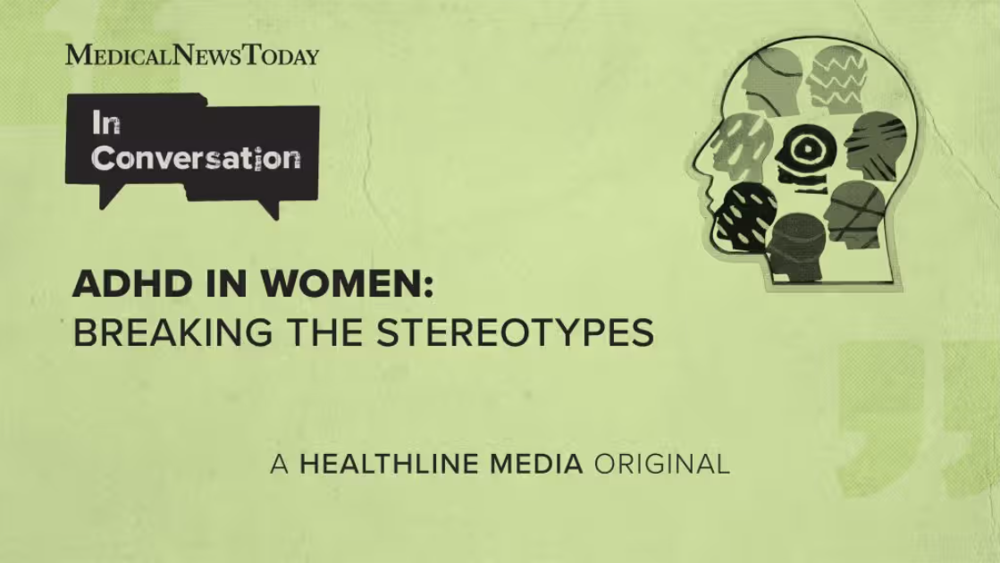

ADHD in women: why many cases are missed
A Medical News Today conversation with Prof. Davida Hartman looks at why girls and women may wait longer for ADHD diagnosis, and why stereotypes about attention and hyperactivity can hide real symptoms.

The article asks why ADHD is still often imagined as a disorder of disruptive boys, even though it can affect women in quieter, less visible ways. That stereotype can delay diagnosis because teachers, families, and clinicians may not recognise internal restlessness, overwhelm, or masking as ADHD-related.
For students, the story is especially relevant because late recognition can affect study habits, confidence, social life, and mental health. A person who has spent years compensating may appear organised from the outside while privately using exhausting routines to keep up.
What “masking” can look like
Masking does not mean symptoms are fake. It means someone is using extra effort to hide or manage them in public. In a university setting, that might look like rewriting notes for hours, avoiding group work because it is unpredictable, or appearing calm while struggling to regulate attention.
The MNT discussion also points to the social pressure on girls and women to be tidy, responsive, and emotionally controlled. Those expectations can make ADHD harder to spot because the visible behaviour may be adaptation rather than ease.
Why diagnosis matters
A diagnosis is not just a label. It can help someone access targeted study strategies, clinical advice, therapy, medication where appropriate, and practical accommodations. More importantly, it can replace the belief that a person is simply lazy or careless with a clearer explanation of how their attention system works.
What readers can take away
If the article feels familiar, the safest next step is not self-diagnosis from a checklist, but a conversation with a qualified professional. The story is useful because it widens the picture: ADHD can be loud and disruptive, but it can also be hidden behind perfectionism, anxiety, and fatigue.
Source: Medical News Today, "ADHD in women: Breaking the stereotypes." This Wellness Post page paraphrases and contextualises the report for student readers; it does not reproduce the original article in full.
Read the original at Medical News Today